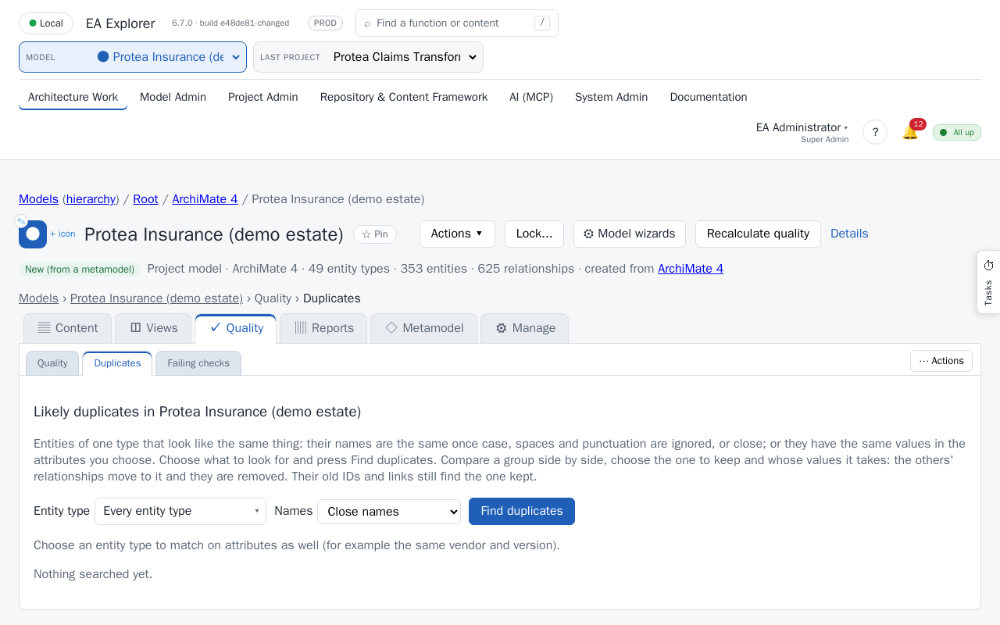

Find and merge duplicates
For: Model Admin, Practising architects
Entities that are the same thing under close names, found and merged into one, their relationships moved to it.

#/metamodel/{m}/duplicatesWhy do this
Duplicates creep in when several people and systems add data: "CRM", "CRM System", "Customer Relationship Mgmt". They split relationships between copies, so impact analysis misses dependencies. Finding and merging them keeps the model whole, and the old IDs still find the kept entity. See Data quality: why it matters and how it is measured.
Quality is not a one-off clean-up but a habit: rules catch problems as they are saved, the score shows the trend, and owners fix what is theirs. A model people trust is one they keep using.
In TOGAF terms: Supports every ADM phase: the content framework is only useful if its building blocks are complete and correct. See EA Explorer and the TOGAF Standard.
The goal: Each real thing is recorded once.
Before you start You need a role that may change the model.
Steps
- Open the model, Quality › Duplicates.
- Choose an entity type (type a few letters to find it) and how close the names must be. Tick attributes to match on as well, for example Vendor and Version.
- Find duplicates. Download the result with Excel, or open a group with Compare and merge.
- Choose the entity kept and each field's value; relationships move to it, and its old IDs still find it.
- Commit, as any change.